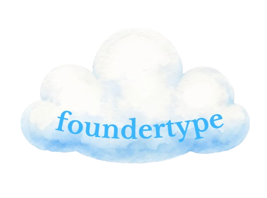

how do you
actually work
twelve quick questions, four traits, sixteen types. no right answers, just go with your gut.
visionary / data-driven
builder / planner
risk-taker / calculator
independent / social
1/12